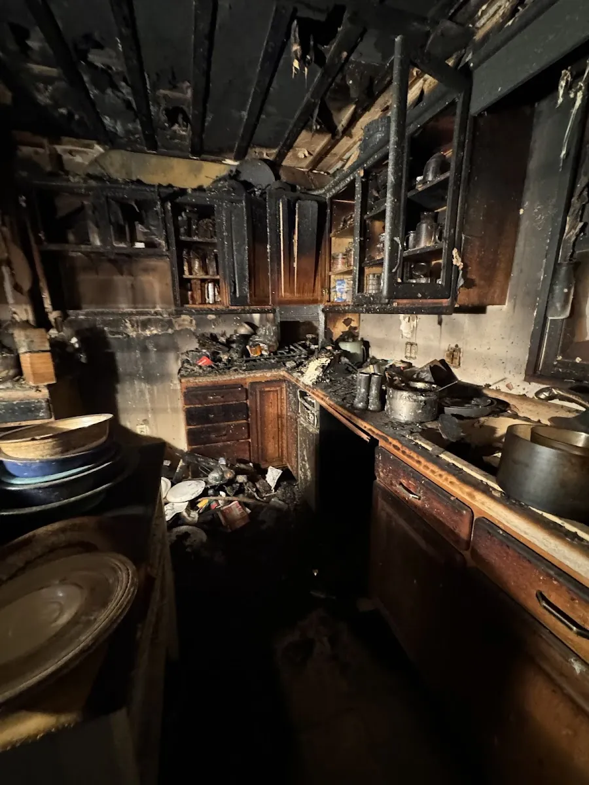

Home · Services · About · Contact · Reviews
A kitchen fire, an apartment fire, a commercial fire and a wildfire are four different jobs — different damage, different coordination, different timelines. Here is how restoration is matched to your property.

The #1 residential fire type: grease and appliance fires with heavy protein-smoke contamination.
Typical time: 3-10 days typical
Multi-unit coordination: your unit, common areas, neighbor units, and landlord/HOA requirements.
Typical time: Varies by building management
Business-interruption-first restoration: code compliance, documentation for business-interruption claims.
Typical time: Weeks; phased to reopen fast
Exterior + interior wildfire recovery: ember damage, smoke infiltration, landscaping and defensible-space reset.
Typical time: 1-4 weeks
A grease fire damages a kitchen and smoke reaches the apartment above. The landlord, both tenants and two insurers are involved. The restoration crew coordinates access, documents everything, and restores both units — kitchen fire restoration $2,000–$8,000 (national range).
Kitchen fires — grease and appliance fires are the #1 residential fire type. A contained kitchen fire typically costs $3,000–$8,000 to restore (Mesa Damage Restoration).
It depends on your lease and insurance: the landlord's policy typically covers the structure, and your renter's insurance covers your belongings. Multi-unit fires need coordination with the building and HOA. Call us and we will help sort the first steps.
Weeks, usually phased so you can reopen as fast as possible. Typical range $5,000–$50,000+. Business-interruption documentation is part of the job.
Ember damage outside plus smoke infiltration inside — HVAC, attic insulation, soft contents and landscaping all need attention. Typical range $5,000–$30,000. The January 2025 Palisades and Eaton fires keep California demand high.
Call now — one call covers kitchen, apartment, commercial and wildfire restoration.
📞 Call (800) 555-0147 Now